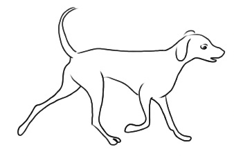
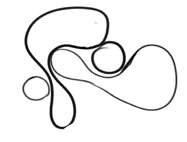
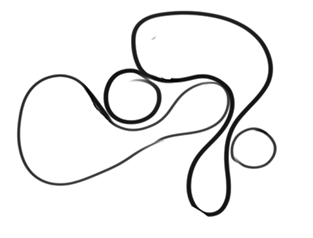

Simple decorative drawing of abstract images
There are many simple abstract images which are used as decorative images. Abstract decorative drawings do not refer to something known, rather they are based on the artist’s creativity. The artist can think of anything that can be useful to a place. Figure 2.36 is an example of a simple abstract image.


Role of a simple decorative drawing
From different perspectives, a simple decorative drawing plays a significant role in our daily life. Some of them are outlined as follows:
Aesthetic appearance: It adds beauty and visual attraction to our surroundings. It can transform ordinary spaces into inviting, attractive, and inspiring environments. A well-decorated room, for example, can create a positive atmosphere and uplift the user’s mood.
Personal identity: It provides a means for individuals to express their personalities, interests, and preferences. Whether it is through the choice of colours, patterns, artwork, or objects, decorations allow us to create things that reflect who we are and what we value.
Creating comfort: It can enhance the comfort of a space. For example, cool colours and warm lighting can make a living room more inviting and a comfortable place to stay.
Setting the mood: It can influence our emotions and set the mood for different occasions. For instance, festive decorations can evoke feelings of joy and celebration.